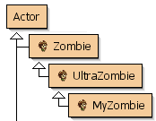
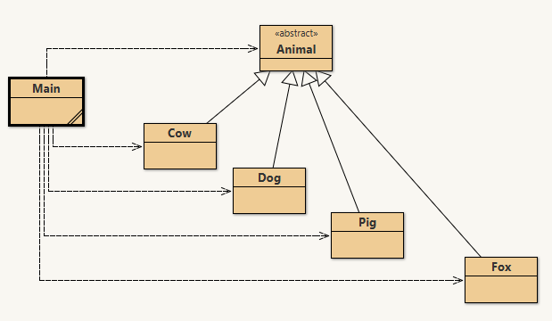
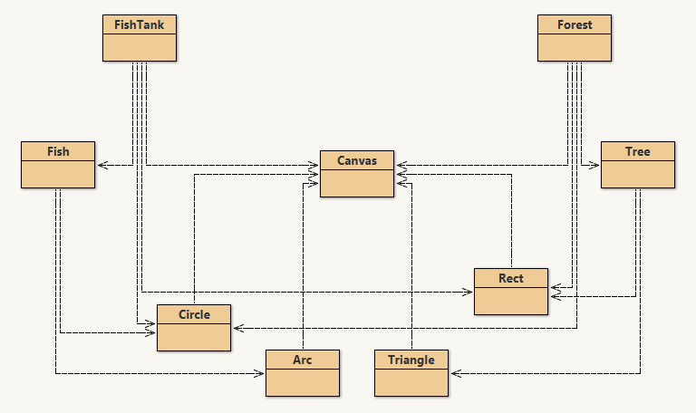
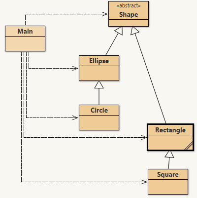

Passing down the riches
In the real world, inheritance involves passing down family wealth from one generation to the next, from grandparents to parents to their children, generally at the end of life.
In computer science, wealth doesn't mean money: wealth is data and methods. Fortunately, nobody has to die for this to happen, because computers can make copies of data and methods freely.
You can think of a class as a blueprint for a house: it's the plan for making the house. The same blueprint can be used to build many houses. Features like color and address would be data that distinguishes one instance from another.
Using the same blueprint saves a lot of money; architects are expensive. But what if you wanted to change the blueprint slightly: add a bigger garage, or change the type of windows?
Of course you wouldn't throw out the whole plan for small changes. You would simply modify that part of the plan: design the new garage and override the original garage design, but keep all the rest of the features: the kitchen, bathrooms, and bedrooms stay exactly as they were. And if someone else later wanted a house with a larger garage like yours, they could use your modified blueprint.
You've already experienced inheritance in Java.
Don't remember? Think waaaay back…
Everybody's favorite zombie…
Zombie is a Java class with just a few capabilities: moving forward and turning right. That was enough for Karl to solve many ZombieLand puzzles. But when Karl evolved into an UltraZombie, he gained new skills, like turning left or facing any direction.
Those new skills were added to the ones that Zombies already had. Becoming an UltraZombie extended the Zombie's capabilities. UltraZombies can still move forward and turn right, and they also know how to turn left and face particular directions.
When you taught Karl to solve the ZombieLand puzzles, you also extended his capabilities by giving him a new plan: any methods you wrote in MyZombie were new skills added on top of everything he already had.
extends
Greenfoot is designed around this kind of inheritance. The class diagram on the right shows each class as a box, connected by arrows that mean IS-A or extends. An UltraZombie IS-A Zombie; a MyZombie IS-A UltraZombie; and all of them extend the Actor class. So each IS-A Actor.
The magic that makes this all work is the very first line of the class declaration:
public class MyZombie extends UltraZombie
The extends keyword means MyZombie has all the power of an UltraZombie, and then some. Every method Karl called was inherited through this chain: UltraZombie → Zombie → Actor.

Let's look at a simple geometry example composed of three classes: Main, Rectangle, and Square. The key relationship is that Square extends Rectangle.
Rectangle includes several methods: getWidth(), getHeight(), getArea(), getPerimeter(), and getName().
Square relies on those methods and adds one of its own: getSideLength(). It also explicitly uses the super keyword to call Rectangle's constructor, passing the same value for both width and height.
Square object.
s?
Refer to the Simple Shapes code you opened in the previous slide. After Square s = new Square(5); is executed, which of the following methods can you call on s? Select all that apply.
▸ Which method(s) can you call on s?
s.getSideLength()
✓: defined in Square
s.getWidth()
✓: inherited from Rectangle
s.getHeight()
✓: inherited from Rectangle
s.getPerimeter()
✓: inherited from Rectangle
s.getArea()
✓: inherited from Rectangle
s.getName()
✓: inherited from Rectangle
All code in Java has to be part of a class, and every class extends exactly one other class: no more, no less. If no extends clause is written, Java automatically extends the Object class. Object is the ultimate ancestor of every class in Java; all classes descend from it, building upon each other through the class hierarchy.
This means every Java object automatically inherits the features provided by Object, for example, the toString() method. That's why you can print any object and get something like MyClass@4F3C56 even when you've never written a toString() method yourself. Your class inherited the toString() method from Object.
Object. When Java searches for a method, it walks up this chain: subclass → superclass → … → Object, until it finds the method or gives up with an error.
When you extend a class, your subclass gains all of the behavior (methods) and data (instance variables) of the superclass and all of its ancestors. However, subclasses only have direct access to public or protected members; they cannot reach into the private members of a parent class.
Subclasses can add new fields and methods, and they can override existing methods to change how they work. What they cannot do is remove fields or methods, or change a public method into a private one; that would be like removing a feature entirely.
When a subclass is instantiated, its constructor can set up its own instance variables, but it cannot directly initialize private members from a parent class; those must be handled through the parent's constructor or setter methods.
Constructors are not inherited. If your subclass needs a constructor, you write it yourself. If you do not write one, Java automatically starts by calling the parent's no-argument constructor (if one exists).
Use super(...) when you want a specific parent constructor, like super(side, side) in Square's constructor. That call must be the first line in your constructor. Leave it out, and Java will try super() for you.
super() and this() in one constructor. Pick one, because only one call can go first.
Any method that is not final can be overridden. To override correctly, the subclass method must match the parent's signature exactly: same name, same parameter types.
If the parameters are different, that is overloading, not overriding. Then you have a new method instead of replacing the inherited one.
Put @Override above overridden methods. It lets the compiler catch mistakes if the signature does not actually match.
Overriding replaces inherited behavior. If you only want to add to the parent behavior, call super.methodName(...) inside your override, then run your subclass logic. Unlike super(...) in a constructor, this call does not have to be first.
super keyword
super is used to access a field or method from the superclass that has been overridden in the subclass. Think of how you use this to access fields that share a name with a constructor parameter. The Square class uses super to call Rectangle's constructor, passing the same value for both width and height.
You can also use super.methodName(…) to invoke the parent's version of a method you've overridden. This is the mechanism behind partial overriding: run the parent's logic first, then your own.
super.super.method() is a compile error; you can only reach one level up at a time.
An abstract class is used to describe some behaviors of a type, but it cannot be instantiated; you can't call new Shape(). This is often used for a generic type where some behaviors are common to all subclasses but there's no sensible "generic" implementation. The shared behaviors are defined as methods in the abstract class and inherited by every subclass.
Abstract classes can also contain abstract methods: a method signature with no body at all. Subclasses must provide the actual implementation. The rule is: if a method is marked abstract, its enclosing class must also be declared abstract. For example, all shapes have an area, but the formula is different for every shape, so getArea() is abstract in the Shape class and implemented differently in Circle, Rectangle, and so on.
Here is a family of classes built on the abstract Shape class. The base Shape class declares that all shapes have a name and an area. Every shape that descends from it adds the features unique to that shape: a Rectangle adds width and height; a Circle adds a radius; a Square extends Rectangle further.
One feature that inheritance unlocks is assignment to a superclass type. You've already seen this in action: List<T> myList = new ArrayList<>(); works because ArrayList extends List.
In Greenfoot, Actor player = new Ghost(); works because Ghost extends Actor.
In the Shapes code, the same idea appears with Shape rectangle = new Rectangle(10, 20);, Shape circle = new Circle(10);, and Shape square = new Square(6);.
This kind of assignment also limits what you can do. For example, rectangle is declared as type Shape, so Java lets it call getName() and getArea(), but not getHeight().
That is why this line in the Shapes.main() method is commented out://System.out.println(rectangle.getHeight());getHeight() belongs to Rectangle, not Shape.
Assignment only works from subclass to superclass: not the other way around. You can store a Square in a Rectangle variable because all squares are rectangles. But you cannot store a Rectangle in a Square variable; not all rectangles are squares, and the compiler will refuse to allow it.
If you know a superclass variable actually holds a subclass object, you can cast it, for example: (Square) s. This tells Java to treat s as a Square.
If you are wrong and the object is really just a Rectangle, Java throws a ClassCastException at runtime.
s?
Refer to the Shapes Framework code open in your browser. After Shape s = new Rectangle(15);, which of the following can you do with s? Select all that apply.
▸ Evaluate each option first, then reveal.
s.getHeight()
✗→ Rectangle method: not visible from Shape
s.getWidth()
✗→ Rectangle method: not visible from Shape
s.toString()
✓→ inherited from Object
s.setName("Rect")
✓→ defined in Shape
s.getName()
✓→ defined in Shape
s.getArea()
✓→ abstract method in Shape
s.getSideLength()
✗→ Square method: not visible from Shape
Poly means many, and morph means form. Polymorphism is what happens when a parent-type variable can refer to many different subclass objects.
The important idea is this: you can call the same method on the same parent-type variable, but get different behavior depending on what object is actually stored there.
But what does that mean?? And why whould you want to do that??!
In the Animal project, Animal has an abstract talk() method, and each subclass implements it differently. Cow, Dog, Pig, and Fox all respond in their own way.
In main, the program builds a list of all the animals, then loops through the list asking each item for its name and to talk(). Even though each item is stored as type Animal, Java still runs the correct subclass version of talk().

🍕
We'll build a Pizza ordering system together: live coding using inheritance. Join the class session below for the screen share. Open the assignment:
You had me at Pizza()
You've seen interfaces before in Java. They are like abstract classes that are entirely abstract: they specify method signatures but contain no code at all. Where classes use the extends keyword to extend superclasses, classes implement interfaces.
A key difference from class inheritance: a class can only extend one other class, but it can implement any number of interfaces. Any class that implements an interface must provide a concrete implementation for every method in that interface; otherwise the class itself must be declared abstract.
Interfaces are also types, which is why you've been writing List<String> myList = new ArrayList<>(); all along. List is an interface, and ArrayList is a class that implements it.
One interface used throughout the Java library is Comparable<T>. It defines a single method: compareTo(T other), which determines the natural ordering of two objects. A class that implements Comparable promises that its objects can be compared and ranked relative to each other.
The convention is: return a negative number if this comes before other, zero if they are equal, and a positive number if this comes after. A common shortcut for numbers is to simply subtract: return this.value - other.value;. Once a class implements Comparable, it works automatically with Collections.sort() and Arrays.sort().
Programs often contain many classes and interfaces. To make sense of the structure, developers draw class diagrams that show which class relates to which; you've seen simplified versions of these in BlueJ.
The diagrams we've seen so far mostly show HAS-A relationships, sometimes called composition. For example, a Forest HAS-A Tree, and a FishTank HAS-A Fish. The tree also HAS-A Triangle and Rectangle for drawing itself, but it is not a descendant of either. HAS-A relationships are shown with dashed lines and open arrows.

IS-A relationships, true inheritance, are shown with solid arrows and open arrowheads. In the diagram, you can see the Main class using all of the shapes, and the shapes' own inheritance hierarchy is shown to the right.
Notice that Shape is labeled <<abstract>>; you cannot instantiate it directly. Ellipse extends Shape, and Circle extends Ellipse. Rectangle extends Shape, and Square extends Rectangle. Interfaces, when shown, use the <<interface>> label and the same notation.

Main to the shapes show that Main HAS-A (uses) each of those shapes; it is not a descendant of any of them.
extends: IS-A; the subclass gains everything the superclass has
super: the bridge back to the parent's implementation
abstract: define the concept; let subclasses define the details
implements: a promise to fulfill an interface's contract
Polymorphism: same call, many possible behaviors